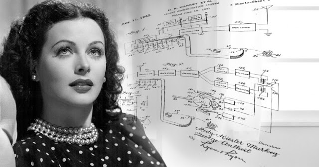

Hedy Lamarr
Hedy Lamarr é, na verdade, o nome artístico da cientista Hedwig Eva Marie Kiesler, responsável por diversas invenções e descobertas que revolucionaram a tecnologia de comunicação. Lamarr nasceu em Viena em 1914, possuía descendência judia e desde pequena recebeu uma educação excepcional, pois para seus pais era algo essencial para a sobrevivência

Infância
Hedwig Eva Maria Kieser nasceu em Viena, na Áustria, novembro de 1914. Filha de judeus, Lamarr sempre recebeu muita atenção de seu pai, que incentivava o seu interesse pelo funcionamento de máquinas. Essas influenciaram Hedy, tanto que aos 5 anos de idade ela já montava e desmontava sua caixa de música para entender como ela funcionava. Sua mãe, por sua vez, pianista, a apresentou às artes, e Hedy fez aulas de balé e piano desde muito nova.
Juventude
Em 1933, aos seus 19 anos, ela se casou com Friedrich Mandl, um fabricante de armas e munições. A empresa de seu marido era fornecedora do partido Nazista, e em 1937, infeliz com o seu casamento, Lamarr fugiu e migrou para os Estados Unidos.
Foi em terras americanas que Hedy pode se dedicar ao seu caminho como atriz, mas também a suas invenções. Na segunda guerra mundial, em 1940, ela queria desenvolver algo que fosse capaz de superar a potência bélica que os nazistas possuíam.
Vida adulta
Lembrando dos conhecimentos adquiridos durante o seu casamento com o fabricante de armas, de que a taxa de falha de torpedos controlados por rádio era alta, Lamarr buscou desenvolver um aparelho que pudesse minimizar esses problemas, não tendo grande risco de interferência nos sinais.
Ela desenvolveu a invenção em conjunto com um amigo, o compositor e pianista, George Antheil, e em 1942 eles patentearam a invenção. Porém, o exército americano era muito resistente a acolherem invenções de civis. Isso só ocorreu anos depois, quando a patente já havia expirado, ou seja, eles nunca receberam um centavo pela invenção.
A invenção de Lamarr e Antheil foi extremamente importante para o desenvolvimento da tecnologia utilizada no Wi-Fi, mais tarde. Tanto que seu apelido atualmente é Mãe do Wi-Fi. Em 1997 a dupla de inventores recebeu o Pioneer Award da Fundação Fronteira Eletrônica e, em 2014, Hedy entrou no Hall da Fama Nacional de Inventores.
